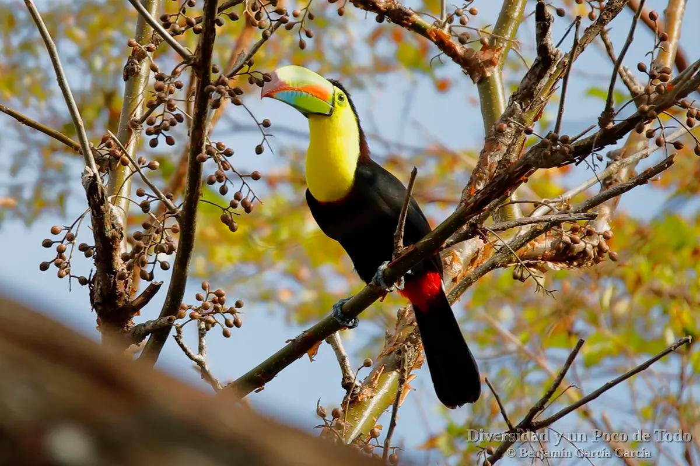

Despre Tucan (Ramphastos toco)
Sunt pasari care se remarca prin penele frumos colorate si mai ales prin ciocul mare si puternic.Pot fi intalniti in zonele tropicale si subtropicale in padurile din America de Sud, mai exact in Brazilia, Paraguay, Argentina si Bolivia
O poza mai mare cu Tucanul
Caracteristicile Tucanului
- Habitat: padurile tropicale si subtropicale
- Marime: 29cm – 63cm
- Greutate: 130g – 680g
- Viteza: 64km/h
- Pradatori: Nevastuici, pasari de prada
- Speranta de viata: 12 – 20 ani
Hrana
Hrana principala a tucanilor din zilele noastre este formata din fructe. Dar daca li se ofera ocazia acestia se dovedesc omnivori. Apasa pe unul dintre link-uri pentru a afla mai multe: